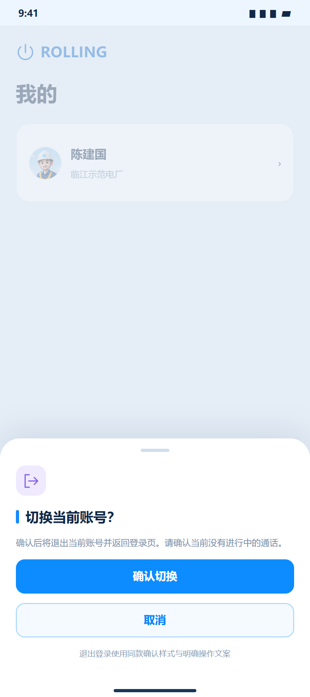
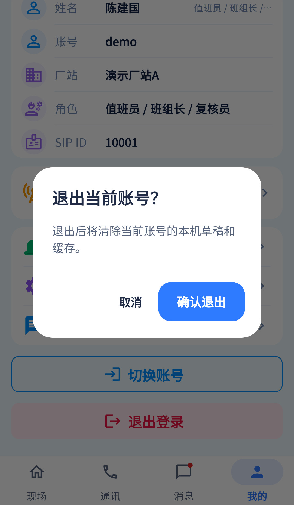
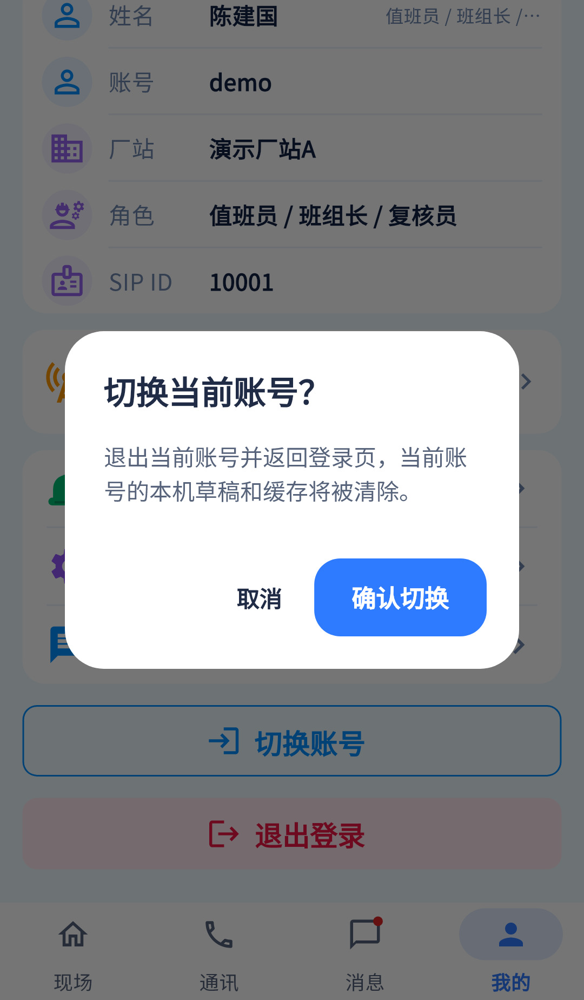

核心行为已实现，主要是弹层样式与说明对齐；切换账号本质为退出后重新登录。
相同 · 已有基础
切换/退出均需确认，取消不退出，确认后清会话回登录，并保护进行中通话。
不同 · UI与场景
参考为底部确认层；当前居中AlertDialog。当前38是退出，42补充切换，两者合起来对应参考38。
01 / 先看 UI
两图显示宽度统一；设计390px与当前360逻辑宽的画布不同。各图可独立滚动到底，点击“原图”放大。


使用既有组件截图；业务数据为示例。
02 / 逐项核对功能与小交互
入口：我的 → 退出登录 · 当前形态：弹层
| 编号 | 部位 | 设计要求 | 当前UI | 功能结论 | 下一步 |
|---|---|---|---|---|---|
| 38-01 | 形态 | 底部圆角确认层、图标、大按钮 | 当前居中对话框横排按钮 | 已有流程，UI不同 | 统一确认弹层样式及取消点击区 |
| 38-02 | 切换 | 切换当前账号及确认切换 | 当前42截图对应 | 已有代码：switching=true仍调用logout | 明示返回登录，不能描述为保存多账号快速切换 |
| 38-03 | 退出 | 退出当前账号及确认退出 | 当前38截图对应 | 已有代码 | 与切换明确文案区分 |
| 38-04 | 清理说明 | 退出当前账号回登录 | 当前还说明清草稿缓存 | 已有代码：revokeUser、删凭据与缓存 | 保留重要影响提示 |
| 38-05 | 通话保护 | 进行中通话先结束 | 当前按钮禁用且session防护 | 已有代码 | 不让UI替换绕过保护 |
| 38-06 | 取消 | 取消保持原账号 | 当前Navigator.pop(false) | 已有代码 | 验返回键/遮罩行为 |
| 38-07 | 退出失败 | 本地已退出但服务端未确认 | session有推送解绑/服务端注销超时提示 | 已有代码 | 保留精确结果，不把网络超时写为全面成功 |
| 38-08 | 返回页 | 结束后登录 | 由会话清空触发router redirect | 已有代码 | 验已清草稿、账号切换不串数据 |
源码依据
mine_page.dart:179；session.dart:225；当前预览manifest:38,42
链接为随报告保存的带行号快照；行号对应分析时源码。以函数和字段共同定位，不能将请求代码视为执行成功证据。
额外覆盖：42 切换账号
我的 → 切换账号
